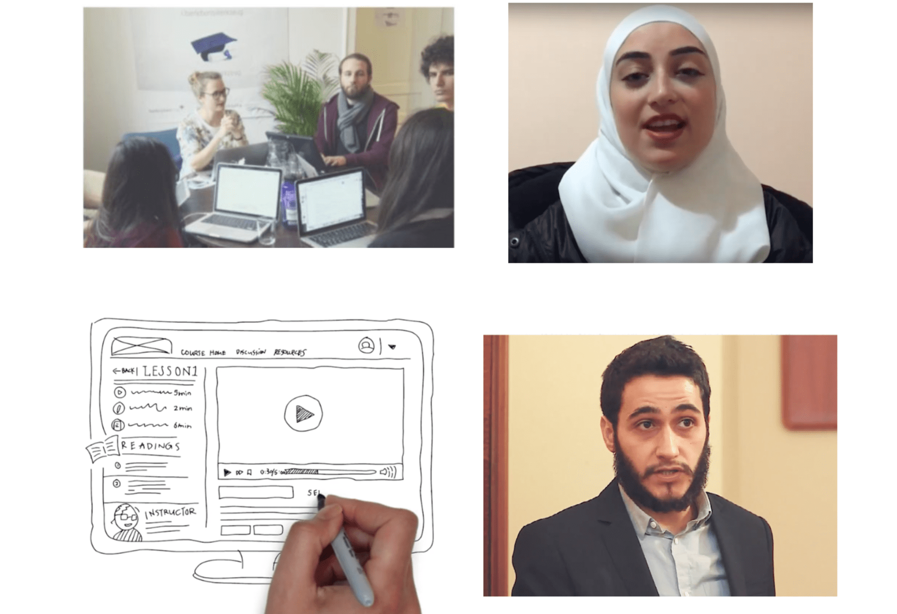

How to Introduce Refugees to Online Learning
It was hard for the refugee students at Kiron to succeed in the online studies which would give them access to European universities. In this project, we aimed to craft an experience which would set students up for success.
Project Outcomes
- 4 hour interactive learning experience
- 100+ pages long manuscript for videos and audio
- A dozen handdrawn animated videos
- Interviews with succesful refugee students studying online
A team of five people, including me, decided to initiate this project. First thing I did together with another coworker was to organise a design sprint with a group of our students. In this design sprint, we identified many of the challenges which students were facing: refugee students often do not have a community who can support them, they were not used to being responsible for their academic learning, and they felt that they lacked essential tools.

We decided to make a massive open online course (MOOC) specifically for our group of students, which would address the challenges the students were facing. Once work started, I was responsible for writing a fourth of the syllabi, and I had to coordinate my other team members as they were writing their parts.
During the production of the MOOC, I was one of two cameramen filming the content, and I was coaching the different people who appeared in the MOOC. To create a sense of community, we included a lot of refugee student voices in the MOOC: if they had advice, we gave them a space to share it with the other students. During the last couple of years, more than a thousand students went through the experience, and the feedback from students has been overwhelmingly positive.